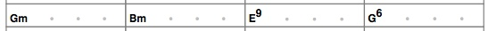
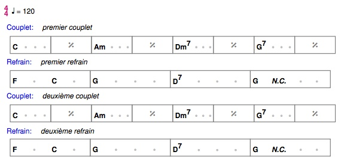
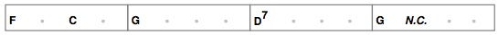
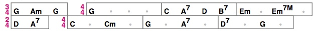

Une grille d'accords d'une chanson est une sorte de partition simplifiée destinée à des musiciens accompagnateurs, par exemple des guitaristes ou des pianistes. Elle indique quel accord jouer à quel moment. Le musicien reste libre de la façon dont il joue l'accord (le "renversement") et des détails de l'exécution ryhmique (il peut jouer une seule fois l'accord pendant le temps indiqué, ou plusieurs fois, avec différents accents rythmiques).
Il existe différents formats de grilles d'accords, adaptés à différents styles de musique (jazz, country, pop, rock, etc.). Le format choisi ici se rapproche un peu d'une partition simplifiée, avec des lignes et des mesures.
Voici un exemple de ligne :

Cette ligne comporte 4 mesures. Chaque mesure comporte ici 4 temps. Sur chaque temps on peut indiquer un nom d'accord (par exemple Gm, c'est-à-dire l'accord mineur de Sol en notation anglo-saxonne) ou un point signifiant que le dernier accord est toujours en vigueur.
Ce qu'on voit ici est le "rendu typographique" final. L'utilisateur n'a pas à dessiner lui-même ce rendu. Il est engendré à partir d'un texte qui décrit de manière compacte ce qu'on souhaite.
Par exemple, la ligne ci-dessus peut être obtenue à partir d'une ligne de texte :
4: Gm Bm E9 G6Le 4: initial signifie que chaque accord écrit dans cette ligne de texte va occuper 4 temps dans la grille.
Le fait qu'une mesure dure 4 temps peut être indiqué au début du morceau par l'indication de la signature rythmique :
4/4
Un morceau n'est pas un bloc monolithique de lignes. Il a une structure : il est divisé en parties portant chacune un nom distinctif comme "Intro", "Couplet", "Refrain", "Pont", etc. Ces noms sont choisis librement. De plus les parties peuvent se répéter : il peut y avoir plusieurs couplets, le refrain peut être joué plusieurs fois, etc. Chaque partie a une grille, et à chaque répétition on jouera la même grille. Les paroles peuvent changer d'une répétition à l'autre mais cela ne concerne pas vraiment les accompagnateurs.
Pour éviter d'avoir à écrire la même grille plusieurs fois dans la description du morceau, on sépare cette description en blocs :
Voici un exemple minimal. Le texte qui décrit le morceau est le suivant :
Structure =
4/4 n=120
Couplet : premier couplet
Refrain : premier refrain
Couplet : deuxième couplet
Refrain : deuxième refrain
Couplet =
C . Am . Dm7 . G7 .
Refrain =
2: F C 4: G D7 1: G 3: NCCe texte engendre la grille suivante :

Le bloc de structure commence par une ligne
Structure =Puis sur la ligne suivante, on indique la signature rythmique (obligatoire), comme 4/4 puis le tempo (facultatif), comme n=120 (120 noires par minute).
4/4 n=120Ensuite chaque ligne représente l'exécution d'une certaine partie. Pour cela on écrit le nom de la partie, suivi de :, puis sur le reste de la ligne un texte quelconque permettant au musicien de se repérer par rapport au reste du groupe, comme par exemple le début des paroles ou tout commentaire approprié. Par exemple ici :
Couplet : premier couplet
Après la structure viennent les grilles des différentes parties, comme par exemple :
Couplet =
C . Am . Dm7 . G7 .La première ligne est le nom de la partie suivi de "="
Ensuite viennent les lignes d'accords. Chaque accord qu'on écrit dure par défaut le nombre de temps associé à la signature rythmique du morceau. Ici la signature est 4/4, le nombre de temps associé est 4 (une mesure contient 4 temps dont chaque temps est une noire).
Lorsqu'on écrit un point . cela signifie qu'il faut répéter la mesure précédente, ce qui se traduira dans le rendu typographique par le symbole conventionnel %.
Dans l'exemple précédent, le couplet n'a qu'une ligne mais on peut bien sûr écrire plusieurs lignes.
Les différents symboles qu'on peut écrire dans une ligne sont détaillés plus loin.
Par défaut, un accord dure le nombre de temps associé à la signature rythmique. Mais on peut changer temporairement cette durée. Si la signature est 4/4 mais si on veut indiquer qu'un certain accord dure 2 temps, on écrira avant l'accord 2:. Cette modification vaut pour toute la suite de la ligne, du moins jusqu'à la prochaine modification de ce type.
Dans l'exemple, on le voit dans le refrain :
2: F C 4: G D7 1: G 3: NCF et C durent 2 temps chacun, ce qui forme une mesure complète. Puis on revient à 4 temps pour G et D7, puis on passe à 1 temps pour G, puis 3 temps pour NC (No Chord, c'est-à-dire un silence). Le rendu est le suivant :

A chaque ligne, on revient à la durée par défaut. C'est celle qui est associée à la signature rythmique en vigueur à cet endroit. Au départ, c'est la signature initiale indiquée dans la structure. Mais la signature peut changer au début d'une ligne ou même à l'intérieur d'une ligne.
Par exemple :
3/4 1: G Am G 4/4 4: G 1: C A7 D B7 2: Em Em7M
2/4 1: D A7 4/4 2: C Cm G A7 D7 GCe qui donnera le rendu suivant :

les durées indiquées ne peuvent pas être choisies entièrement librement : l'accumulation de durées doit toujours reformer des mesures entières.
Par exemple, avec une signature de 4/4, les lignes suivantes sont incorrectes :
Dépassement de mesure : 2: C 3: F. On accumule 5 temps, ce qui dépasse la mesure à 4 temps.
Mesure incomplète : 1: C 2: F. Si c'est la fin de la ligne, on a accumulé seulement 3 temps, ce qui est insuffisant pour une mesure à 4 temps.
Une signature rythmique s'écrit avec deux nombres séparés par "/", comme par exemple 4/4.
A chaque signature sont associés un nombre de temps et la durée d'un temps. Pour certaines signatures fréquemment utilisées, on a les conventions suivantes :
2/4 : 2 noires3/4 : 3 noires4/4 : 4 noires3/8 : une noire pointée6/8 : 2 noires pointées9/8 : 3 noires pointées12/8 : 4 noires pointéesMais pour le rendu d'une grille, la seule information importante est le nombre de temps par mesure.
Dans les autres cas de signature, c'est le premier nombre. Par exemple pour 5/4, c'est 5.
Si on place ce symbole au milieu d'une ligne d'accords, il faut impérativement qu'il soit placé après une mesure complète. Le changement de signature ne peut pas se faire à l'intérieur d'une mesure. Par exemple, pour une mesure à 4/4, la ligne suivante serait incorrecte : 3: G 3/4. La mesure n'est pas finie après le G (il manque un temps), on ne peut pas placer le symbole.
En musique, il y a de nombreux types d'accords possibles et différentes façons de les noter. On s'est limité ici aux plus usuels.
On écrit d'abord le nom de la note fondamentale de l'accord, en majuscule (comme A, C#, Eb).
Ensuite on ajoute une indication du type de l'accord (majeur, mineur, etc.) :
C désigne l'accord de Do majeur, de notes Do Mi Sol.m : accord mineur. Cm = Do Mib Solsus2 : suspension sur la seconde. Csus2 = Do Ré Sol2 : comme sus2sus4 : suspension sur la quarte. Csus4 = Do Fa Sol4 : comme sus4dim : diminué. Cdim = Do Mib Solb+5 : quinte augmentée. C+5 = Do Mi Sol#7 : accord de septième. C7 = Do Mi Sol Sibm7 : accord mineur septième. Cm7 = Do Mib Sol Sib7sus2 : septième avec suspension sur la seconde. C7sus2 = Do Ré Sol Sib7sus4 : septième avec suspension sur la quarte. C7sus4 = Do Fa Sol SibM7 : majeur avec septième majeure : CM7 = Do Mi Sol SIm7M : mineur avec septième majeure : Cm7M = Do Mib Sol SIdim7 : septième diminuée . Cdim7 = Do Mib Solb Sibb, ou si on veut Do Mib Solb Lam7b5 : mineur septième avec quinte diminuée. Cm7b5 = Do Mib Solb Sib. Appelé aussi "demi-diminué".6 : majeur avec sixte. C6 = Do Mi Sol La.m6 : mineur avec sixte. Cm6 = Do Mib Sol Laadd2 : majeur avec addition de la seconde. Cadd2 = Do Ré Mi Sol9 : accord majeur avec septième et neuvième. C9 = Do Mi Sol Sib Rém9 : accord mineur avec septième et neuvième. Cm9 = Do Mib Sol Sib RéIl existe d'autres types possibles, en particulier dans le jazz. Ils ne sont pas pris en compte ici.
Après un nom d'accord comme D7, on peut rajouter une indication de basse à jouer, comme /F#, ce qui donne D7/F# : accord de Ré septième sur une basse de Fa#.
Un exemple d'indication de tempo est n=120. Le n indique une durée de référence, ici une noire, 120 représente le nombre par minute : 120 noires par minute. Les durées de référence sont au nombre de trois :
n: noireb: blanchenp : noire pointée Donc on pourra écrire par exemple : n=120, b=60, np=80. Ces trois indications sont en fait équivalentes du point de vue de l'exécution : puisqu'une blanche vaut deux noires, il y a deux fois moins de blanches que de noires, donc 60 au lieu de 120.
Pour indiquer qu'il ne faut pas jouer d'accord, on écrit le symbole NC (No Chord).
Pour indiquer qu'il faut jouer une mesure identique à la mesure précédente, on écrit juste un point : .. On ne peut placer ce symbole qu'à un endroit où on vient de terminer une mesure. Par exemple, pour une mesure à 4/4 :
D G .On joue une mesure de D, puis une mesure de G et ensuite on répète la dernière mesure jouée, c'est-à-dire G. A l'exécution, l'effet est le même que si on avait écrit :
D G GMais cette dernière notation est un peu plus chargée, alors que l'autre facilite la lecture.
Dans le rendu typographique de la grille figurera le symbole %, conventionnel pour exprimer la répétition.
Ce symbole ne peut être placé qu'après une mesure complète. Par exemple, pour une mesure à 4/4, la ligne suivante serait incorrecte : 3: G . La mesure n'est pas finie (il manque un temps), on ne peut pas placer le symbole. De même ce symbole ne peut pas être le premier d'une ligne, il faut qu'il y ait une mesure avant.
/
Par défaut, chaque fois qu'on écrit dans la structure une référence à une partie, comme Couplet: premier couplet, la grille de cette partie sera développée dans le rendu final. Mais il se peut qu'on ne souhaite pas développer cette partie, pour des raisons d'encombrement ou de lisibilité. Pour indiquer cela, il suffit de terminer la référence à la partie par le symbole /, comme Couplet: premier couplet /. Dans le rendu final apparaîtra seulement l'en-tête de partie : Couplet : premier couplet, il ne sera pas suivi par la grille de la partie.
Lorsqu'on tape le texte source d'une grille, il arrive qu'on fasse des erreurs ... Voici les principales erreurs qu'on peut rencontrer :
Bm est valide, mais pas bm. Les types d'accord sont répertoriés ci-dessus, on ne peut pas en écrire d'autres.Structure =.Couplet: premier couplet. Et dans un bloc de définition de partie, la première ligne doit être le nom de la partie suivi de =, comme Couplet =2: G 1: D. Il n'y a que 3 temps alors qu'on en attend 4. Cela peut aussi se produire quand on place mal un symbole qui doit impérativement se placer entre deux mesures, comme la répétition de mesure (.) ou le changement de signature (3/4). Par exemple, la ligne suivante produit une erreur : 2: G 1: D .. La mesure n'est pas finie, on ne peut pas placer le symbole .3: G D. Il y a 6 temps, ce qui dépasse 4. Dans une vraie partition, on pourrait écrire un symbole de liaison pour dire que la note commence dans une mesure et se prolonge sur la suivante, mais on ne dispose pas de ce formalisme ici. Il ne doit pas y avoir de chevauchement de mesure.